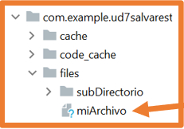

Data persistence is a very important issue in mobile applications.
The first reason is well known to everyone and happens when the device's orientation/configuration changes. This has been solved with the use of states and ViewModel.
However, there are other situations where it is interesting to be able to store data for later use.
In this unit, the following tools for implementing data persistence will be studied:
File System.
Datastore.
Room.
File System
As with any operating system, Android uses a file system.
This file system allows several options for storing application data:
App-specific storage (App-specific storage).
Shared storage (Shared storage).
Preferences.
Databases.
App-specific storage
Stores files intended for use only by the application itself.
You can create dedicated folders in both internal and external storage.
Internal storage should be used for confidential information (other apps will not have access to it).
Shared storage
Stores files that the application can share with other apps, such as documents, media (audio, video…), or other files.
Preferences
Private storage for the application. Allows key-value pairs.
Databases
Stores structured data privately using the Room library (a framework that uses SQLite).
When choosing a storage type, several variables come into play:
Size of the data to be stored: internal storage has limited space.
Ensuring access to the data: internal storage or a database is better, as external storage is not always accessible.
Type of data: if the files should not be shared, app-specific storage should be used.
Data privacy: if working with sensitive data, it should be stored in preferences, a database, or internal storage. The latter also hides the data from users.
App-Specific Storage
Android offers the following locations for exclusive use by the application.
Directories in internal storage:
Android prevents other applications from accessing these locations.
Starting with Android 10 (API 29) and higher, these locations are encrypted.
They are a good place to store sensitive data.
They typically have limited capacity.
Directories in external storage:
These locations are intended for exclusive use by the application, although other applications with the proper permissions may access them.
If files are to be created that are intended to be shared with other applications, they should be created in the shared space of external storage.
Both options include a directory for storing persistent files and another for cache.
Access to files in internal storage
Common and persistent files are located in a directory that can be accessed using the filesDir property of a context object (as shown earlier, the context can be obtained in various ways).
Using the File API (similar to Java), you can access and store files.
To avoid affecting the app's performance, the same file should not be opened and closed multiple times.
Here’s how to open a file using the API:
val file = File(applicationContext.filesDir, "file_name")
Storing a file using a Stream
As an alternative to the File API, you can use the openFileOutput() method to get a FileOutputStream object, which allows writing to a file inside the filesDir directory.
val myFile = "myFile"
val content = "My first Android file!"
applicationContext.openFileOutput(myFile, Context.MODE_PRIVATE).use {
it.write(content.toByteArray())
}
From Android Studio, you can view the created files using the Device File Explorer:
data -> data -> package_name -> files
In Android 7 (API 24) or higher, if you don’t specify Context.MODE_PRIVATE, a security exception will be thrown
If you want to allow other applications to access internal storage files, you need to use a
FileProvider
with the FLAG_GRANT_READ_URI_PERMISSION attribute.
To read the content of a file, use the openFileOutput() method
to get a BufferedReader object that returns a sequence of strings (one for each line of the file):
// Access file using Stream
applicationContext.openFileInput(myFile).bufferedReader().useLines { fileContent ->
var text = ""
content.forEach {
text += it
}
Text(text = text)
}
Visualize file list
You can get an array of file names in the filesDir directory using the fileList() method:
This method has a small drawback: it creates the directory with the app_ prefix
and outside the files directory:
To create subdirectories within files, you can use the methods of the File class as in Java.
val appDir: File = applicationContext.filesDir
val subDir = File(appDir, "subDirectory")
if (!subDir.exists()) subDir.mkdir()

Cache
If you need to temporarily store files with sensitive data, they should be stored in the cache directory.
To create a file in cache storage, use
File.createTempFile(), specify the prefix (name),
the suffix (extension, by default .tmp), and a context object:
To access files located in the cache directory, use the cacheDir property on a context and the File class:
val cacheFile = File(applicationContext.cacheDir, "fileName")
The cache directory is managed by Android,
if the app runs out of space, Android will delete files stored in that directory.
You can delete files from the cache directory using one of the following methods.
If the file is located in the files folder:
applicationContext.deleteFile("fileName")
Using a File object depending on the file’s location:
val fileToDelete = File(applicationContext.filesDir, "fileName")
fileToDelete.delete()
//In cache
val cacheFile = File(applicationContext.cacheDir, "fileName")
cacheFile.delete()
Access to External Storage
If additional space is needed to store application-specific files, external storage can be used, provided it is available.
External storage can be a partition in the internal memory, but it can also be located on an external storage device such as an SD card or even a USB flash drive connected to the USB.
In cases where external storage is located on a connected storage device, this storage may become unavailable, for example, if an SD card is removed from the device.
Therefore, it is not advisable to create files in external storage that the proper functioning of the application depends on.
Checking the Availability of External Storage
It is important to check that external storage is available before attempting to read or write data to it.
Using the Environment class and its getExternalStorageState method,
you can check the availability of external storage as well as the permissions on it.
If the state is MEDIA_MOUNTED, you will have read and write permissions,
if the state is MEDIA_MOUNTED_READ_ONLY, you will only have read permissions.
A good way to check this would be with the following functions:
fun isExternalStorageWritable(): Boolean {
return Environment.getExternalStorageState() == Environment.MEDIA_MOUNTED
}
fun isExternalStorageReadable(): Boolean {
return Environment.getExternalStorageState() in
setOf(Environment.MEDIA_MOUNTED, Environment.MEDIA_MOUNTED_READ_ONLY)
}
Selecting a Location on External Storage
Since external storage can be either in internal memory or on a connected device,
when storing information in external storage, you must choose the location.
To access the locations, use the ContextCompat class and its getExternalFilesDirs method.
This will return an array with all the available volumes.
Generally, the first element in the array will be the primary external storage volume,
and this should be used unless it is full or unavailable.
The following code would get the path to the primary external storage volume.
val externalStorageVolumes: Array =
ContextCompat.getExternalFilesDirs(applicationContext, null)
val primaryExternalStorage = externalStorageVolumes[0]
By checking the size of the externalStorageVolumes array, you can determine if there are additional volumes.
The first element (index 0) is internal storage.
The microSD card is usually the second element (index 1).
If other devices like flash drives are connected, they will appear after that.
With index 1, you can access all external storage.
val externalStorage = applicationContext.getExternalFilesDirs(null)[1]
You can specify a particular directory within external storage:
val externalDownloads = applicationContext.getExternalFilesDirs(Environment.DIRECTORY_DOWNLOADS)
Accessing Files in External Storage
To access files in external storage, use the getExternalFilesDir method
of a context object.
To avoid affecting the application's performance, the same file should not be opened and closed multiple times.
val fileName = "myFile"
val appSpecificExternalDir = File(applicationContext.getExternalFilesDir(null), fileName)
On Android 11 (API 30) and higher, creating subdirectories in external storage is not allowed.
Creating Files in External Storage Cache
To create a file in the external storage cache, use the externalCacheDir property of a context object:
val cacheFileName = "myTemporaryFile"
val externalCacheFile = File(applicationContext.externalCacheDir, cacheFileName)
Deleting Files from External Storage Cache
You should use the delete method on a File object representing the file to be deleted.
Multimedia Content
If the app works with multimedia files that are not essential but add value to the user experience,
it is best to store them in external storage:
fun getAppSpecificAlbumStorageDir(context: Context, albumName: String): File? {
// Get the directory for images within the application's specific
// external storage directory
val file = File(context.getExternalFilesDir(Environment.DIRECTORY_PICTURES), albumName)
// The following instruction attempts to create the directory if it doesn't
// already exist
if (!file.mkdirs()) {
// Error creating the directory
}
return file
}
For the proper functioning of the application, it is important to use the directory names provided by the API
with the constants of the Environment class:
If none of the predefined names fit the application's needs, you can pass null to the getExternalFilesDir method.
This will store the files directly in the root directory of the specific external storage for the application.
Checking Free Space
Some devices have very limited storage space, so when developing an application, special care should be taken with the space the app occupies.
A good practice before storing a file is to check if the file fits in the available space.
However, it is not always necessary to check free space because there are times when it is not known how much space the file will occupy.
In these cases, you can attempt to save the file and catch the IOException that will be thrown if the file cannot be stored.
To check the free space the device can provide, use the getAllocatableBytes method.
This method may sometimes show more capacity than the real one because the system may have detected files in other applications' caches and may delete them if necessary.
If there is enough space, the allocateBytes method should be used.
If this method is not used, the app can request the user to delete files or clear the device's entire cache.
The following code shows how to obtain the device's free space:
// 10 MB of storage is needed.
val NUM_BYTES_NEEDED_FOR_MY_APP = 1024 * 1024 * 10L;
val storageManager = applicationContext.getSystemService<StorageManager>()!!
val appSpecificInternalDirUuid: UUID = storageManager.getUuidForPath(filesDir)
val availableBytes: Long = storageManager.getAllocatableBytes(appSpecificInternalDirUuid)
if (availableBytes >= NUM_BYTES_NEEDED_FOR_MY_APP) {
storageManager.allocateBytes(appSpecificInternalDirUuid, NUM_BYTES_NEEDED_FOR_MY_APP)
} else {
val storageIntent = Intent().apply {
// To ask the user to delete all app cache, the value ACTION_CLEAR_APP_CACHE should be used
action = ACTION_MANAGE_STORAGE
}
}
DataStore
DataStore permite almacenar en el dispositivo conjuntos de datos pequeños o simples.
Los datos almacenados con DataStore se guardan en el almacenamiento interno específico de la aplicación
por lo que ninguna otra aplicación podrá acceder a ellos.
Proto DataStore: almacenar objetos (instancias de clases).
Debido a la complejidad de desarrollo de Proto DataStore, en clase solo se estudiará Preferences DataStore.
DataStore permite crear archivos para guardar información, generalmente preferencias.
La ventaja de DataStore radica en que es el sistema operativo el que maneja toda la gestión de los archivos de preferencias.
Reglas para usar DataStore:
Solo mantener una instancia de DataStore abierta sobre el mismo archivo.
El tipo genérico de DataStore debe ser inmutable.
No mezclar nunca SingleProcessDataStore y MultiProcessDataStore para el mismo archivo.
Preferences DataStore
Preferences DataStore permite almacenar pares clave-valor.
Los datos que se pueden almacenar serán de tipos básicos:
Int
Double
String
Boolean
Float
Long
Además se ofrece la posibilidad de almacenar un conjunto de cadenas:
Set<String>
Lo más habitual es que las preferencias se guarden y recuperen desde el ViewModel para poder mantener las variables de estado de manera correcta.
Así, para mantener una buena estructura de archivos en el proyecto se recomienda crear un paquete llamado preferences
donde se ubicará una la clase en la que se implementará toda la lógica de guardado y recuperación de los valores de las preferencias.
Esta nueva clase se utilizará desde el ViewModel correspondiente.
Preferences DataStore hace uso de corrutinas y de Flows (flujos de datos).
Los Flow permiten emitir varios valores de manera secuencial que se recogerán desde una corrutina, por ejemplo,
se pueden usar para recibir actualizaciones en vivo desde una base de datos.
Un Flow es similar a un Iterator pero que usa funciones de suspensión para producir y consumir los valores.
En Preferences DataStore se usa un Flow para recuperar los datos.
Preferences DataStore también necesita el contexto de la aplicación para la correcta gestión de los archivos de preferencias.
Creación de Ejemplo
El primer paso para poder usar Preferences DataStore es añadir la dependencia en build.gradle.kts (Module) y sincronizar
class AppPreferences(val context: Context) {
//Variables estáticas para representar las calves de los valores a guardar
companion object{
val NAME = stringPreferencesKey("NAME")
}
//Variable DataStore a la que se le pasa el nombre del archivo de preferencias "preferences"
//Al declararla con el delegado "by" la variable será un singleton: solo habrá una instancia
private val Context.dataStore: DataStore<Preferences> by preferencesDataStore(name = "preferences")
//Función que recibe un String y lo almacena en el archivo de preferencias declarado en el DataStore
//El guardado se debe realizar en segundo plano por lo que necesitará una corrutina para ello
//se añade la palabra suspend para indicar que cuando se realice la llamada se use una corrutina
suspend fun saveFullName(name: String){
context.dataStore.edit {preferences ->
preferences[NAME] = name
}
}
//Función que recupera un String del archivo de preferencias declarado en el DataStore.
//Esta función devuelve un Flow
fun loadName()= context.dataStore.data.map { preferences ->
preferences[NAME] ?: ""
}
}
ViewModel que hace uso de la clase anterior
//Como se necessita el contexto el viewModel se extiende de AndroidViewModel para que el propio
//Sistema operativa le pase el objeto Application del que se recuperará el contexto
class PreferencesViewModel(application: Application):AndroidViewModel(application) {
//Declaración del objeto para guardar/almacenar preferencias
private val preferences = AppPreferences(application.applicationContext)
private val _fullName = MutableLiveData<String>()
val fullname: LiveData<String> = _fullName
fun onFullNameChange(fullName:String){
_fullName.value = fullName
}
//Método que llama a AppPreferences para almacenar la preferencia en el archivo de preferencias
fun saveFullName(name: String){
viewModelScope.launch {
preferences.saveFullName(name)
_fullName.postValue("")
}
}
//Método que llama a Appreferences para recuperar la preferencia del archivo de preferencias
fun loadFullName(){
viewModelScope.launch {
//Como loadName devuelve un Flow para recuparar sus datos se usa el método collect()
preferences.loadName().collect(){
_fullName.postValue(it)
}
}
}
}
En las diferentes pantallas de la aplicación si se necesita guardar o recuperar datos del archivo de preferencias se hará uso de los métodos del ViewModel:
Si se quieren guardar datos de más complejidad como son objetos, en la clase que almacena las preferencias se debe deconstruir y construir ese objeto.
Clase para guardar/recuperar preferencias:
Datos complejos
Si se quieren guardar datos de más complejidad como son objetos, en la clase que almacena las preferencias se debe deconstruir y construir ese objeto.
La clase a almacenar podría ser algo así:
data class User(
val username:String,
val email:String,
val id: Int
)
Clase para guardar/recuperar preferencias:
class AppPreferences(val context: Context) {
//Variables estáticas para representar las calves de los valores a guardar
companion object{
val FULL_NAME = stringPreferencesKey("FULL_NAME")
val EMAIL = stringPreferencesKey("EMAIL")
val ID = intPreferencesKey("ID")
}
//Variable DataStore a la que se le pasa el nombre del archivo de preferencias "preferences"
//Al declararla con el delegado "by" la variable será un singleton: solo habrá una instancia
private val Context.dataStore: DataStore<Preferences> by preferencesDataStore(name = "preferences")
//Función que recibe un String y lo almacena en el archivo de preferencias declarado en el DataStore
//El guardado se debe realizar en segundo plano por lo que necesitará una corrutina para ello
//se añade la palabra suspend para indicar que cuando se realice la llamada se use una corrutina
suspend fun saveUser(user: User){
context.dataStore.edit {preferences ->
preferences[FULL_NAME] = user.username
preferences[EMAIL] = user.email
preferences[ID] = user.id
}
}
//Función que recupera un String del archivo de preferencias declarado en el DataStore.
//Esta función devuelve un Flow
fun loadUser()= context.dataStore.data.map { preferences ->
User(
username = preferences[FULL_NAME] ?: "",
email = preferences[EMAIL] ?: "",
id = preferences[ID] ?: 0
)
}
}
Y el ViewModel podría quedar de la siguiente manera:
//Como se necessita el contexto el viewModel se extiende de AndroidViewModel para que el propio
//Sistema operativa le pase el objeto Application del que se recuperará el contexto
class PreferencesViewModel(application: Application):AndroidViewModel(application) {
//Declaración del objeto para guardar/almacenar preferencias
private val preferences = AppPreferences(application.applicationContext)
private var _id = MutableLiveData<Int>()
val id:LiveData<Int> get() = _id
private val _username = MutableLiveData<String>()
val username: LiveData<String> = _username
private var _email = MutableLiveData<String>()
val email:LiveData<String> get() = _email
fun onUserNameChange(username:String){
_username.value = username
}
fun onEmailChange(email:String){
_email.value = email
}
//Método que llama a AppPreferences para almacenar la preferencia en el archivo de preferencias
fun saveUser(user: User){
viewModelScope.launch {
preferences.saveUser(user)
_username.postValue("")
}
}
//Método que llama a Appreferences para recuperar la preferencia del archivo de preferencias
fun loadFullName(){
viewModelScope.launch {
//Como loadName devuelve un Flow para recuparar sus datos se usa el método collect()
preferences.loadUser().collect(){
_username.postValue(it.username)
_email.postValue(it.email)
_id.postValue(it.id)
}
}
}
}
Crea una aplicación que tenga un SplashScreen y un onboarding
donde se piden datos del usuario, nombre, email, etc...
Estos datos se guardarán en un DataStore, y la aplicación detectará si no hay datos mostrará el onboarding y si hubiera datos iría a la pantalla principal.
La aplicación no ha de ser funcional, es decir, la pantalla principal puede ser sólo un texto.
Las apps que controlan grandes cantidades de datos estructurados pueden beneficiarse con la posibilidad de conservar esos datos localmente.
El caso de uso más común consiste en almacenar en caché datos relevantes para que el dispositivo no pueda acceder a la red,
de modo que el usuario pueda explorar ese contenido mientras está sin conexión.
La biblioteca de persistencias Room brinda una capa de abstracción para SQLite
que permite acceder a la base de datos sin problemas y, al mismo tiempo, aprovechar toda la tecnología de SQLite.
En particular, Room brinda los siguientes beneficios:
Verificación del tiempo de compilación de las consultas en SQL
Anotaciones de conveniencia que minimizan el código estándar repetitivo y propenso a errores
Rutas de migración de bases de datos optimizadas
Debido a estas consideraciones, se recomendamos que uses Room en lugar de usar las APIs de SQLite directamente.
Estos son los tres componentes principales de Room:
La clase de la base de datos que contiene la base de datos y sirve como punto de acceso principal para la conexión subyacente a los datos persistentes de la app
Las entidades de datos que representan tablas de la base de datos de tu app
Los objetos de acceso a datos (DAOs) que proporcionan métodos que tu app puede usar para consultar, actualizar, insertar y borrar datos en la base de datos
La clase de base de datos proporciona a tu app instancias de los DAOs asociados con esa base de datos.
A su vez, la app puede usar los DAOs para recuperar datos de la base de datos como instancias de objetos de entidad de datos asociados.
La app también puede usar las entidades de datos definidas para actualizar filas de las tablas correspondientes o crear filas nuevas para su inserción.
En la siguiente imagen, se muestran las relaciones entre los diferentes componentes de Room.
Ejemplo de implementación
En esta sección vamos a crear una aplicación para guardar tareas, cada tarea tendrá un nombre, y podremos indicar si la tarea está hecha o no y eliminarla.
Entidad de datos
Crearemos la entidad TaskEntity que será el objeto que hará referencia a la información que queremos almacenar.
Cada instancia de TaskEntity representar una fila. En este fichero, definiremos la tabla
TaskEntity.kt
@Entity(tableName = "tasks")
data class TaskEntity(
@PrimaryKey(autoGenerate = true)
var id: Int = 0,
@ColumnInfo(name ="name" ) var name: String,
@ColumnInfo(name ="isDone" ) var isDone: Boolean = false
)
Donde:
@Entity indica que es una entidad de Room y le indicamos el nombre real que tendrá la tabla
@PrimaryKey indica que ese campo (id) actuará de clave primaria y además, en este caso se auntoincrementará
@ColumInfo podemos indicarle el nombre del campo de la tabla asociado al atributo de la clase. Si queremos que sea el mismo no sería necesario
El siguiente código define un DAO llamado TaskDao.kt.
TaskDao proporciona los métodos que el resto de la app usa para interactuar con los datos de la tabla tasks.
TaskDao
@Dao
interface TaskDAO : GeneralDAO {
@Query("SELECT * FROM tasks ORDER BY name")
override fun getAllTasks(): LiveData<MutableList<TaskEntity>>
@Query("SELECT count(*) FROM tasks WHERE name = :name")
override suspend fun taskExists(name: String): Int
@Query("SELECT * FROM tasks WHERE id LIKE :id")
override suspend fun getTaskById(id: Long): TaskEntity
@Insert(onConflict = OnConflictStrategy.REPLACE)
override suspend fun addTask(taskEntity: TaskEntity): Long
@Update
override suspend fun updateTask(taskEntity: TaskEntity): Int
@Delete
override suspend fun deleteTask(taskEntity: TaskEntity): Int
}
Observa el decorador @Dao que indica que es el DAO de Room
Por otra parte presta atención a los demás decoradores para consultas, actualziaciones, inserciones y borrado. Los números que devuelven son las filas afectadas.
Podemos también, indicar la estrategia a seguir en caso de conflicto. Por ejemplo, en este caso, si añadimos algo que ya existe, lo reemplazaría.
También presta atención cómo podemos parametrizar las consultas. WHERE name = :name donde :name es el nombre del parámetro de la función
Finalmente en las queries podemos devolver, los valores que deseemos pero además podemos hacerlo mediante LiveDatas o Flows. En este caso,
usaremos LiveData al cual nos subscriviremos, de manera que cada vez que haya una cambio en la consulta (es decir, se modifique la tabla), el LiveData nos lo emitirá,
y se podrá actualizar automáticamente sin tener que realizar de nuevo la consulta.
Vemos que en este caso extiende de GeneralDAO que es una interfaz general por si utilizamos otro DataSource (ficheros, APIs, etc)
que tengan los mismos métodos, minimizando el cambio en el código.
GeneralDAO tendría el siguiente código.
GeneralDAO
interface GeneralDAO {
// Devuelve la lista de tareas dentro de un LiveData
fun getAllTasks(): LiveData<MutableList<TaskEntity>>
// Devuelve la cantidad de elementos que su name coincida con el argumento
suspend fun taskExists(name: String): Int
// Devuelve una tarea a partir de su id
suspend fun getTaskById(id: Long): TaskEntity
// Añade una tarea y devuelve su id
suspend fun addTask(taskEntity: TaskEntity): Long
// Actualiza la tarea y devuelve el nº de filas afectadas
suspend fun updateTask(taskEntity: TaskEntity): Int
// Borra la tarea y devuelve el nº de filas afectadas
suspend fun deleteTask(taskEntity: TaskEntity): Int
}
Base de datos
Con el siguiente código, se define una clase TaskDatabase para contener la base de datos.
TaskDatabase define la configuración de la base de datos y sirve como el punto de acceso principal de la app a los datos persistentes.
La clase de la base de datos debe cumplir con las siguientes condiciones:
La clase debe tener una anotación @Database que incluya un array entities que enumere todas las entidades de datos
asociados con la base de datos.
Debe ser una clase abstracta que extiendaRoomDatabase.
Para cada clase DAO que se asoció con la base de datos,
esta base de datos debe definir un método abstracto que tenga cero argumentos y muestre una instancia de la clase DAO.
TaskDatabase
@Database(entities = arrayOf(TaskEntity::class), version = 1)
abstract class TasksDatabase : RoomDatabase() {
abstract fun taskDAO(): TaskDAO
companion object { // Patrón Singleton
private var instance: TaskDAO? = null
fun getInstance(context: Context): TaskDAO {
// el método databaseBuilder devuelve una referencia a la base de datos
return instance ?: Room.databaseBuilder(context, TasksDatabase::class.java, "tasks-db")
.build().taskDAO().also { instance = it }
}
}
}
Para usar la base de datos usames el método de la clase estática de Room: Room.databaseBuilder(context, TasksDatabase::class.java, "tasks-db")
Fíjate que le pasamos el contexto.
Luego podemos obtener el DAO usando el método abstracto taskDAO() y con éste usar sus métodos.
Si lo hicieramos por pasos separados haríamos algo así:
val db = Room.databaseBuilder(
applicationContext,
TasksDatabase::class.java, "tasks-db"
).build()
val taskDAO = db.taskDAO()
val tasks = taskDAO.getAllTask()
En nuestro caso hemos implementado el patrón Singleton de manera que haya una única instancia de la BD y además nos devuelve directamente el DAO. Para acceder haremos algo así:
val taskDAO = TasksDatabase.getInstance(context)
val tasks = taskDAO.getAllTask()
Resto de la App
Como hemos comentado vamos a construir una App que sea un gestor de tareas, indicando si la tarea está realizada o no y además podamos eliminarla.
A continuación, mostraremos los archivos requeridos para la aplicación completa.
ViewModel
Primero creamos un ViewModel para gestionar la BDD y la UI
TaskViewModel
class TaskViewModel(application: Application) : AndroidViewModel(application) {
// Se crea una instancia del DAO
val taskDAO: TaskDAO = TasksDatabase.getInstance(application)
// Se crea un LiveData para la lista de tareas que observará al "SELECT *" del DAO
var taskList: LiveData<MutableList<TaskEntity>> = MutableLiveData()
// Función que inicializa la lista de tareas desde la BBDD
fun getAllTasks(){
viewModelScope.launch(Dispatchers.IO) {
taskList = taskDAO.getAllTasks()
}
}
// Función que añade una tarea a la base de datos
fun addTask(task: String) {
viewModelScope.launch(Dispatchers.IO) {
if (taskDAO.taskExists(task) == 0) {
taskDAO.addTask(TaskEntity(name = task))
}
}
}
// Función que elimina una tarea de la base de datos
fun deleteTask(task: TaskEntity){
viewModelScope.launch(Dispatchers.IO) {
taskDAO.deleteTask(task)
}
}
// Función que actualiza una tarea de la base de datos.
fun updateTask(task: TaskEntity, isDone: Boolean){
viewModelScope.launch(Dispatchers.IO) {
taskDAO.updateTask(task.copy(isDone = isDone))
}
}
}
Observamos que extiende de AndroidViewModel porque necesitamos el contexto
Vemos que se le pasa el navController por si quisieramos ir a otra pantalla por ejemplo una de detalle.
Y además recibe el TaskViewModel para poder llamar a los métodos del ViewModel y subscrivirse y observar los LiveData de éste.
Con este LiveData "pintaremos" en la LazyColumn tantos items como tenga la BDD
También vemos que tiene su propio ViewModel el MainScreenViewModel para algún estado propio que definiremos a continuación:
MainScreenViewModel
class MainScreenViewModel() : ViewModel() {
private val _taskName = MutableLiveData<String>()
val taskName: LiveData<String> = _taskName
fun onTaskNameChange(taskName: String) {
_taskName.value = taskName
}
fun onTaskNameDelete() {
_taskName.value = ""
}
}
Vemos como tiene una serie de animaciones y lo más importante, activamos el LiveData de consulta de todas las tareas.
MainActivity
Por último tenemos el MainActivity
MainActivity
class MainActivity : ComponentActivity() {
override fun onCreate(savedInstanceState: Bundle?) {
super.onCreate(savedInstanceState)
val taskViewModel by viewModels<TaskViewModel>()
setContent {
GestorTareasTheme {
// A surface container using the 'background' color from the theme
Surface(
modifier = Modifier.fillMaxSize(),
color = MaterialTheme.colorScheme.background
) {
Navigation(taskViewModel)
}
}
}
}
}
Creamos una instancia del ViewModel y se la pasamos al componente Navigation